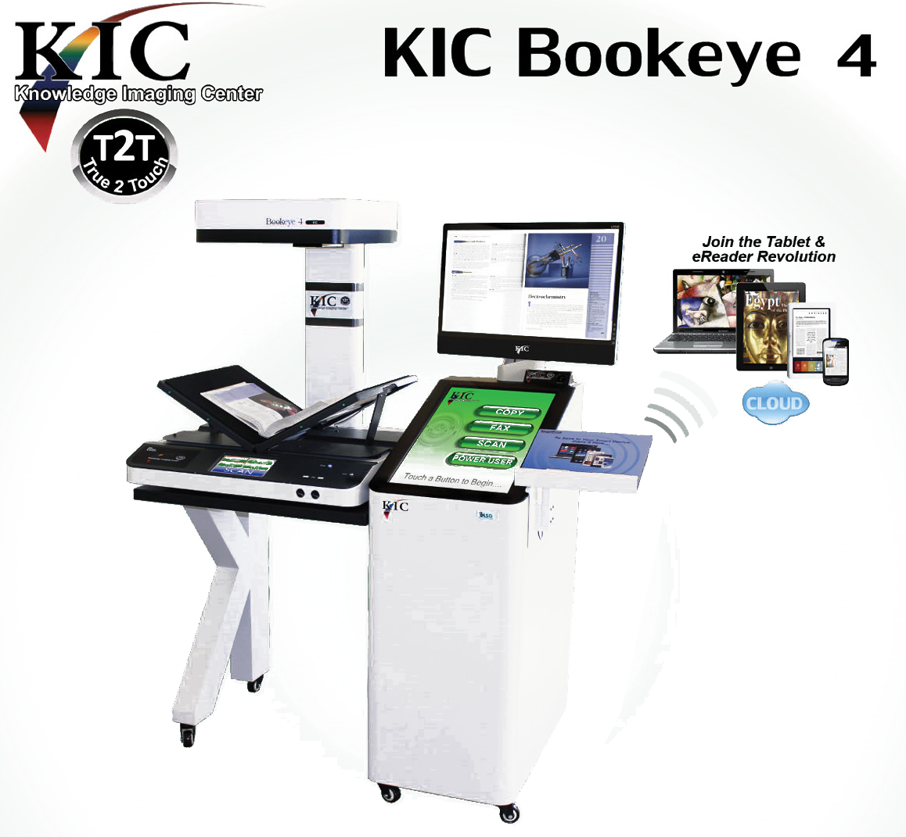
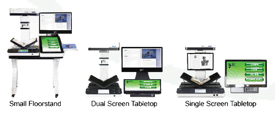

KIC Bookeye 4
KIC Bookeye 4
CAPTURE, COPY, FAX & COLLATE BOOK CONTENT
Peerless Face-up Book Scanning for the 21 ST Century Library
Study, Report, Research, Collaborate ... Digitally
KIC Bookeye 4 is an indispensable tool for research, study and production of enhanced quality reports and papers with crystal clear color and black & white excerpts from books, magazines and very large journals. In addition, as a UDSA compliant digitize-on-demand system conveniently located among the stacks, KIC can be used as an ad hoc digitization station by Interlibrary Loan departments. With its 600 dpi option, KIC Bookeye 4 sytems are perfect as shared resources, capturing the finest details for digital archival and preservation.The KIC Bookeye 4 can capture 20 book pages per minute for instant access on tablets, notebooks, smart devices and easy transfer to desktop PCs and servers. With a bed size more than 40% larger than its nearest competitor, Bookeye 4 is also the only high resolution scanner in the world that supports both v-cradle and flat modes, and can scan material as large as 24 x 17 inches. Photocopiers, fax machines, PCs, monitors and keyboards clutter up otherwise beautiful libraries across America. KIC Bookeye.4 reverses that trend, replacing copiers and fax machines and adding scanning in a single machine with clean lines and efficient design.
